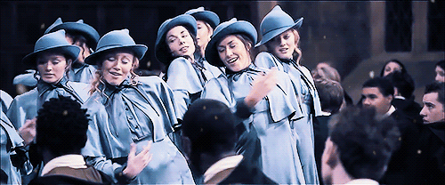

About
Tipografia
As fontes utilizadas neste site são: Miss Fajardose para os títulos principais, Raleway e Segoe UI para os subtítulos e Quicksand para os parágrafos.
Miss Fajardose
Raleway
Segoe UI
Quicksand
Paleta de Cores
A paleta é Neutro-Clássica, com um foco em cores sóbrias e formais, como preto, branco e tons de cinza ou sépia.
Design
A inspiração estética e visual do design deste site é baseada na Academia de Magia Beauxbatons do universo Harry Potter, sua identidade visual se apoia na sobriedade, formalidade e elegância.